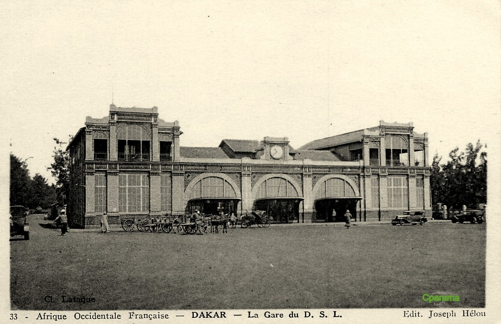
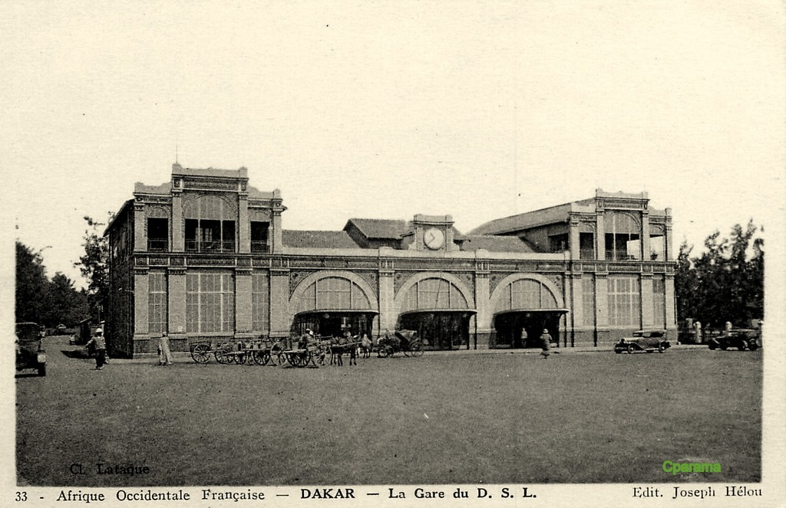
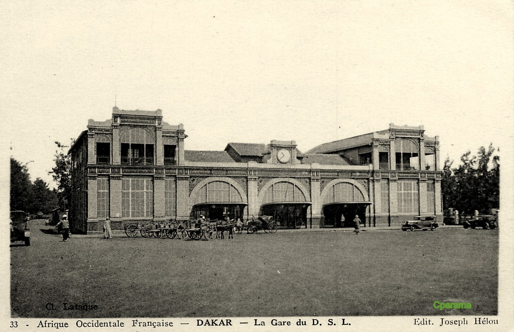

La gare de Dakar est une gare ferroviaire située à Dakar au Sénégal, sur la place de la gare Dakar-Niger rebaptisée place du Tirailleur le 23 août 2004. La gare ferroviaire de Dakar, construite en 1914 et d'architecture coloniale, qui reliait Dakar à Bamako (Mali), qui a été laissée à l'abandon quelques années après l'indépendance en 1960, sera bientôt utilisée comme terminus à Dakar dans le cadre d'une reprise de la circulation ferroviaire.
Compagnie du chemin de fer de Dakar à Saint-Louis
La Compagnie du chemin de fer de Dakar à Saint-Louis est une filiale de la Société de construction des Batignolles, chargée de la construction de la première ligne de chemin de fer en Afrique-Occidentale française, celle reliant Dakar à Saint-Louis du Sénégal, alors capitale de la colonie.
Les origines
La question du chemin de fer du Cayor est soulevée une première fois le 10 septembre 1879, à l'occasion de la ratification d'une convention avec Lat Dior1. L'État français, ministère de la Marine et des Colonies, organise en 18802 un concours ouvert aux grandes entreprises françaises, pour construire et faire exploiter par une compagnie une voie ferrée de 265 kilomètres2 entre Dakar et Saint-Louis. Le chemin de fer de Dakar à Saint Louis (DSL) est concédé pour 99 ans à la Société de construction des Batignolles (SCB) par une convention du 30 octobre 18802, confirmée par la loi du 29 juin 18822, avec rachat possible à compter du 1er mai 1908.
La loi du 29 juin 1882 approuve le cahier des charges. Si la compagnie dispose d'un capital de 5 millions de francs, l'État lui fournit une avance de 12 680 000 francs. Le montage financier de l'opération est assez alambiqué : la ligne sera construite et exploitée aux frais de l'État qui, en vertu de la garantie accordée à la compagnie, devra payer l'intérêt du capital de construction et les insuffisances d'exploitation. L'État a de bonnes raisons pour offrir de tels avantages au concessionnaire. La colonisation débute à peine et les habitants se montrent résolument hostiles aux « tentatives de pénétration ». Les opérations militaires ne sont pas terminées, et les guerres avec les Damels du Cayor et les Teignes3 du Baol ne prendront fin qu'avec la mort du dernier damel, tué en décembre 1886.
Pour réaliser cet important chantier et exploiter la future ligne, la SCB d'Ernest Goüin crée en 18832 une société anonyme au capital de 5 millions de francs, appelée Compagnie du chemin de fer de Dakar à Saint-Louis. Le conseil d'administration de la SCB autorise l'apport de la concession, la souscription d'un maximum de 6 700 actions de la nouvelle compagnie et la signature d'un marché à forfait et une convention, précisant les conditions financières des rapports entre les deux sociétés.
Construction et débuts de l'exploitation

Organisation du chantier
Les conditions locales compliquent2 ce chantier, la compagnie est confrontée à une main-d'œuvre sans expérience et à des conditions de terrain et de climat particulièrement difficiles. Durant les trois années nécessaires pour ouvrir la ligne dans sa totalité, il faut faire venir : le personnel, ouvrier et techniciens qui prennent le bateau à Marseille4, mais aussi tout ce qui est nécessaire à la construction de la ligne : matériel (fixe et roulant) et matériaux (pierres de taille, briques et charpente). Le fonctionnement du chantier pose aussi des problèmes importants avec notamment, la fièvre jaune et des conditions climatiques qui nécessitent le rapatriement du personnel européen, chaque année, pendant la mauvaise saison.
Commencés simultanément à Rufisque et à Saint-Louis, les travaux suivent une marche rapide à partir du 27 juillet 1883 sous la direction du directeur en chef du service construction Blondelet. L'exploitation commence dès la mise en service des premiers tronçons, sous la direction de l'officier d'état-major Bois, collaborateur direct du colonel Pinet-Laprade. La mise en service de la ligne dans sa totalité a lieu en juillet 18855.
Confrontation avec la population locale
Les premières années d'exploitation sont assez dures, les populations locales luttant contre le nouveau moyen de colonisation qu'est le chemin de fer. Le 29 décembre 1884, la maison d'équipe du PK 37,5 est attaquée par les Sérères, un homme d'équipe est blessé, mais deux prisonniers restent entre les mains du commissaire de police. À l'origine de l'affaire, une sombre histoire de vol de vin de palme. Le 19 février 1885, le train déraille à Bargny, provoquant la mort d'un enfant et trois blessés graves. Le 8 mars 1885, lors du passage du train no 2 au PK 182,4, on signale des jets de projectiles divers sur le convoi par « des Noirs déjà assez grands ». Le 24 mars, le même train (le no 2) déraille à proximité du pont de Rufisque à la suite d'un affaissement du remblai. La locomotive, le fourgon et une voiture disparaissent dans le marécage.
Il faut aussi compter avec les hommes du damel, qui ne prennent pas vraiment le chemin de fer au sérieux. Le 12 avril 1885, un télégramme annonce : « Le roi du Cayor est venu se plaindre que les employés de la voie avaient dés-harnaché un cheval hier au PK 102 et de plus, suivant ses expressions, que ces employés faisaient des bêtises avec ses hommes. Il menace de se plaindre au gouverneur ». Plus prosaïquement, il semble bien qu'une rixe ait éclaté entre les ouvriers et un homme du Cayor qui voulait circuler à cheval sur la ligne.
Le 14 octobre, le chef d'équipe no 17 qui effectue une tournée en lorry trouve au PK 131,5 une briquette de charbon « placée de façon à faire dérailler le train ». Au PK 132, c'est une racine d'arbre qui est placée en travers des rails. On décide donc d'instaurer une « surveillance spéciale » sur toute cette section.
Pendant ce temps, les administrateurs de la compagnie négocient des arrangements avec le damel. Un acte, additionnel au traité du 22 janvier 1885, conclu entre la France et le Cayor, offre des « conditions exceptionnelles » au chemin de fer, à savoir une extension des terrains réservés à la compagnie autour des gares. En échange, il faut accorder « la concession au damel de la gratuité du parcours sur toute la ligne pour lui et sa suite de 20 personnes ».
Une difficile modernisation au début du XXe siècle
Les installations vieillissent rapidement. La compagnie décide de moderniser l'ensemble au début du XXe siècle, mais par petites touches. En 1906, le téléphone commence à remplacer le vieux télégraphe Breguet. De nouveaux trafics voient le jour, en particulier grâce à la politique de grands travaux de la colonie qui nécessite une grande quantité de matériaux. Deux carrières ouvrent en 1907 et se raccordent au chemin de fer : celle de M. Peignet, au PK 24,482, et celle de M. Sallenave, entrepreneur à Dakar, au PK 2,550, où est construit un long embranchement de 5,3 km.
La construction de la ligne du Baol, première amorce du Chemin de fer de Thiès à Kayes (CFTK) exploitée par le Dakar-Saint-Louis jusqu'en 1910, est une véritable manne pour la compagnie : en 1909, cette ligne procure à elle seule un trafic de 45 000tonnes d'arachides, presque toutes à destination de Rufisque. Mais la situation ne présente pas que des avantages, et elle fait surtout ressortir le manque de matériel de la compagnie. La même année, le Dakar Saint-Louis est sollicité pour établir des voies sur le port de commerce de Dakar, tandis que la nouvelle gare de Saint-Louis du Sénégal est inaugurée le 24 juillet 1909.
Malgré tout, ces tentatives de modernisation restent bien timides. Dès 1910, les chambres de commerce locales mettent la compagnie sur la sellette, ce qui finit par provoquer une enquête très officielle du gouverneur. Les résultats sont particulièrement édifiants :
« L'exploitation est défectueuse à tous les points de vue. Les trains de voyageurs n'arrivent jamais, ou bien rarement, à l'heure règlementaire. Souvent, les retards dépassent une ou deux heures, et même plus. Ces retards proviennent généralement du temps considérable perdu dans les gares à charger et décharger des marchandises, à laisser des wagons vides pour en prendre des pleins, et de l'insuffisance du personnel. Cela n'arriverait pas si les trains de voyageurs étaient uniquement des trains de voyageurs. Le matériel, aussi bien machines que wagons, est défectueux et insuffisant. Les wagons voyageurs sont mal entretenus, d'une saleté repoussante, les coussins de banquettes maculés de taches de graisse. On a vu des voyageurs, des dames, rester debout tout le trajet jusqu'au terminus, soit 10 heures de route, plutôt que de s'assoir sur des coussins dont la malpropreté leur répugnait. Il faut aussi signaler que les wagons sont vieux et mal compris. »
L'enquête révèle que les plaintes des chambres de commerce sont « en partie justifiées » Effectivement, les retards sont fréquents. Au cours du premier semestre 1910, le train 1 accusera 73 retards d'une amplitude allant de 30 à 255 minutes. Le train 2 se "contente" de 47 retards. Pour le gouverneur, « la mauvaise exploitation provient de l'instabilité du personnel européen, qui est trop peu payé ».
Un programme de modernisation beaucoup plus ambitieux est alors lancé. En juillet 1912, la compagnie décide de remplacer tous les ponts métalliques de la ligne. Dix nouveaux tabliers sont commandés, et l'opération est terminée en 1915. Mais celle-ci est surtout motivée par l'introduction des nouvelles locomotives de type Mallet.
La reconstruction de la gare de Dakar
Dakar, entre-temps devenue le point de départ de la ligne du Niger, nécessite une gare plus monumentale. L'avant-projet du bâtiment et des installations est approuvé par décision ministérielle du 24 décembre 1908. L'agrandissement des quais du port de commerce, qui a déjà donné lieu à divers échanges de terrains, doit provoquer la disparition de la gare voyageurs d'origine, reportée 1 000 mètres plus à l'ouest, et la suppression des voies ferrées entre ces deux points. Les travaux sont terminés en 1914, mais en raison du décès du président du Dakar-Saint Louis, André de Traz, la cérémonie d'inauguration est purement supprimée par décision du gouverneur en date du 16 juin.
 
